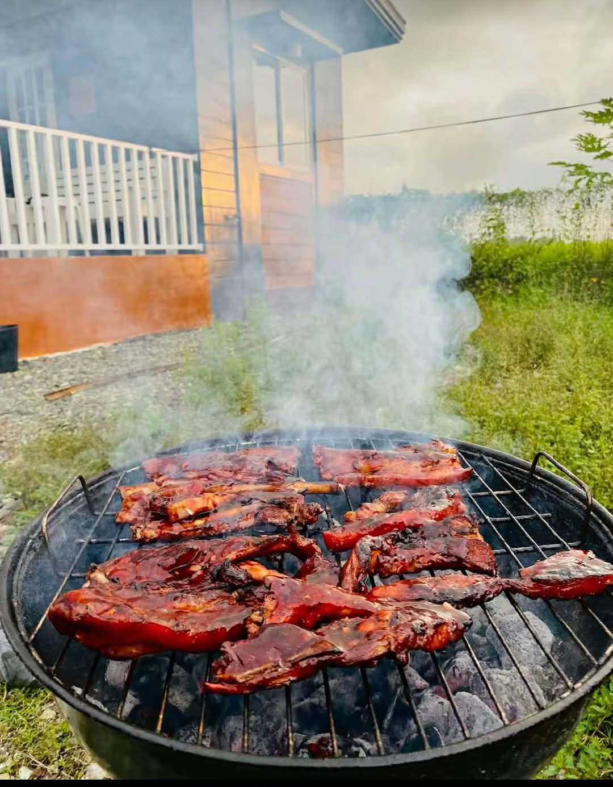
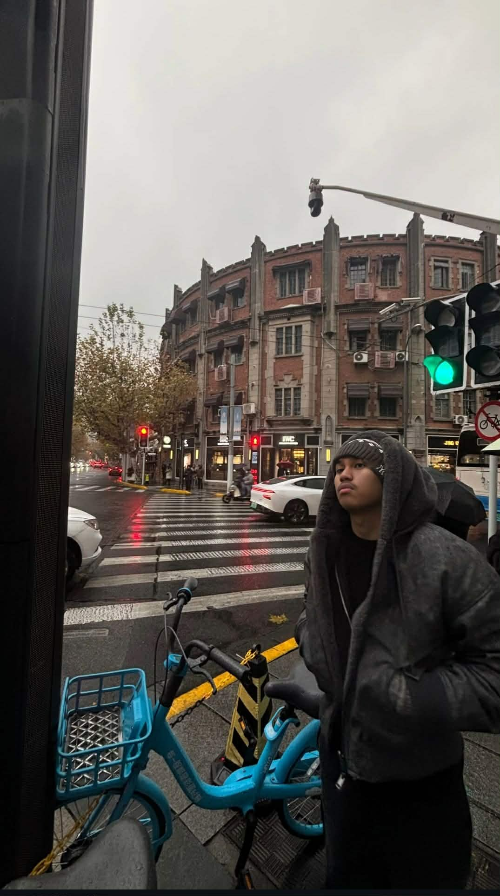

About Me
.jpg)
Hello!
My name is James Elly Tangki-on, a student of Eastern Samar State University taking up Bachelor of Science in Information Technology (BSIT). I enjoy learning new technologies, creating websites, programming applications, and participating in sports such as basketball and running. I strive to improve my skills and become a successful IT professional in the future.
Personal Information
- Name: James Elly Tangki-on
- Course: BS Information Technology
- School: Eastern Samar State University
- Age: 19
- Address: Sabang North, Borongan City, Eastern Samar
Educational Background
| Level | School | Year |
|---|---|---|
| Elementary | La Salle Green Hills Elementary School | 2013 - 2019 |
| Junior High School | Eastern Samar National Comprehensive High School | 2019 - 2023 |
| Senior High School | Eastern Samar National Comprehensive High School | 2023 - 2025 |
| College | Eastern Samar State University | Present |
Hobbies & Interests
- 🏀 Playing Basketball
- 🏃 Running
- 🎮 Playing Video Games
- 🎵 Listening to Music
Gallery


🎵 My Top 5 Favorite Songs
| # | Song | Artist | Play |
|---|---|---|---|
| 1 | Float Music | Waiian | |
| 2 | Real | Waiian | |
| 3 | All I Know | Waiian | |
| 4 | No Drugs In Heaven | Kartell'em | |
| 5 | Cold December | Rod Wave |